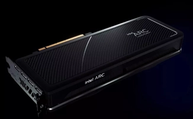
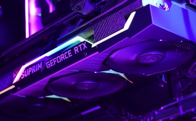
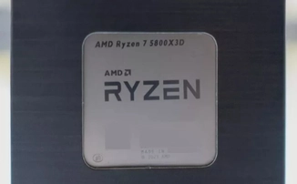
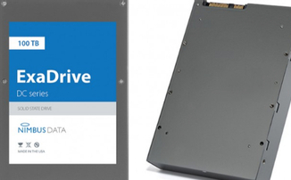

Видеокарта Intel Arc A770 показывает в Geekbench OpenCL результаты, сравнимые с RTX 2070
Intel собирается запустить продажи своих дискретных видеокарт летом текущего года, но Benchleaks уже делится результатами, которые показывает флагман линейки ARC Alchemist в Geekbench.
NVIDIA RTX 3090 Ti может быть быстрее и энергоэффективнее, чем AMD RX 6900 XT
Все уже знают, что NVIDIA RTX 3090 Ti способна потреблять очень много энергии, но коллеги из издания Igor's Lab опубликовали результаты тестирование, которые показали кое-что интересное.
AMD Ryzen 7 5800X3D уничтожил Intel Core i9-12900KF в игровых тестах
Ранее в сети уже появлялись результаты сравнения AMD Ryzen 7 5800X3D с Intel Core i9-12900K на примере Shadow of the Tomb Raider, где процессор "красных" значительно опережал флагман "синих".
Все-таки ноутбуки с видеокартами Intel ARC существуют, но только в Южной Корее

Ранее сегодня поддержка компании Intel сообщила о переносе релиза мобильных видеокарт ARC A350 и A370 на июнь текущего года, но позже извинилась за путаницу из-за неправильной информации.
Nimbus Data разрабатывает SSD-накопитель на 200 терабайт
Томас Искович пообщался с коллегами из TechRadar Pro и рассказал о том, что до конца этого года его компания выпустит новый SSD-накопитель, который заменит собой их текущего 100-терабайтного флагмана.